In this notebook we will create embeddings for the images based on png files containing black and white versions of the letters in each script. Then we will cluster the embeddings, compare the clusters to rule-based clusters, and finally analyze specific rules and their relationship to the image embeddings clustering.
# import needed packages/functionsfrom functions import*# random seed for reproducibilityrandomSeed =5
None of PyTorch, TensorFlow >= 2.0, or Flax have been found. Models won't be available and only tokenizers, configuration and file/data utilities can be used.
None of PyTorch, TensorFlow >= 2.0, or Flax have been found. Models won't be available and only tokenizers, configuration and file/data utilities can be used.
Creating Image Embeddings
In order to create embeddings for the images (which were made using ImageForAllCharacter.py’), we will use the imgbeddings package.
# reading in all image filesallImages = listdir("character_images")# making image embeddingsif(False):# img embeddings model ibed = imgbeddings()# place to save embeddings embeddings = []# go through all images of characters and make embeddingsfor path in allImages: image = Image.open(r"character_images/"+path) embedding = ibed.to_embeddings(image) embeddings.append(embedding[0])# save embeddings in dataframe df = pd.DataFrame(embeddings) df['Character'] = allImages# save to a csv file df.to_csv('imageEmbeddings.csv',index=False)# read the csv embeddings once they are madedf = pd.read_csv('imageEmbeddings.csv',index_col=False)
Clustering Image Embeddings
Now that we have the image embeddings, we can cluster them using a clustering algorithm such as Kmeans (as used below). Inertias are shown, but there is no clear elbow so any analysis would have to choose a specific cluster number.
# does clustering for all scripts togetherdf = pd.read_csv('imageEmbeddings.csv',index_col=False)allScriptClusters = doKmeans(df.drop('Character',axis=1),range(1,50),True)allScriptClusters['Character']=df['Character']allScriptClusters.to_csv('Clusters.csv',index=False)
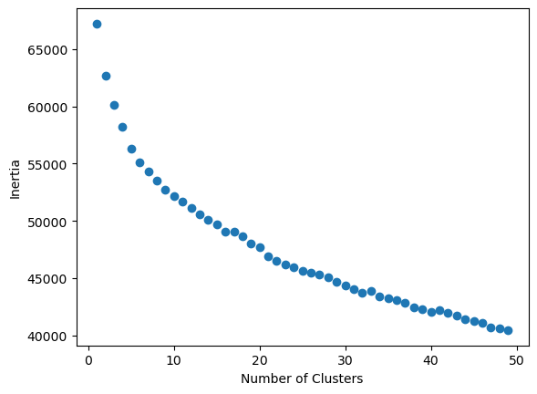
# read the clusters from the saved fileallScriptClusters = pd.read_csv('Clusters.csv',index_col=False)
For some kind of output, we can look at the clusters quickly by creating a file where each row contains a cluster with the characters in typed form. Unfortunately, some of the characters are not in most fonts and will therefore show up as boxes, but this is a quick way to look at the type of clustering done on the embeddings.
# creates text-based representation of the clusters in a text file (kmeans20.txt)# the rows are clusters and each value in a row is a charactercharClusters = []clusterNum =20f =open("kmeans20.txt", "w")# goes through each clusterfor cluster inrange(clusterNum): charClusters.append([])# goes through each character in the cluster chars = []for char in allScriptClusters[allScriptClusters["Kmeans "+str(clusterNum)]==cluster]['Character']:# gets indexes of the unicode i1 = char.index("+") i2 = char.index(".")# uses unicode to add the character x =int("0x"+char[i1+1:i2],16) charClusters[cluster].append(chr(x)) f.write(','.join(charClusters[-1])) f.write('\n')f.close()
As well as clustering the images all together, we can cluster the images within each script. To do this, we need to extract the information regarding the script and unicode for each character from the image name, as seen below.
# determines the script IDs and unicodes based on the character colscripts=[]unicodes=[]for line in df["Character"]: s = line.index('_') e = line.index('.') scripts.append(line[:s]) unicodes.append(line[s+1:e])# adds scripts and unicodes to the dataframedf["Script"]=scriptsdf["Unicode"]=unicodes# list of all the scriptsunique_scripts =list(set(scripts))
Now we can cluster based on each individual script and save each cluster set into a separate file in the imgClusters folder.
# creates kmeans clusters for each script individually# each file is saved in the imgClusters folderif(False):# goes through each scriptfor script in unique_scripts:# does kmeans for values 1-10 on the script x = doKmeans(df[df['Script']==script].drop(['Character',"Script","Unicode"],axis=1),range(1,10),showIntertias=False) temp = pd.DataFrame() temp['Character']=df[df['Script']==script]['Character'] temp["Script"]=df[df['Script']==script]['Script'] temp["Unicode"]=df[df['Script']==script]['Unicode']for i inrange(2,10): temp['Kmeans '+str(i)]=x['Kmeans '+str(i)]# saves the output to a file in the imgClusters folder temp.to_csv('imgClusters/kmeans_'+script+'.csv',index=False)
Once we have clustered the letters for each script, we need to be able to visualize these clusters as seen below.
# printing clusters for Mandaicclusters = pd.read_csv('/home/zoe/imgClusters/kmeans_6138ca71dc2a42003d45670e.csv',index_col=False)num =4for i inrange(num): showImgCluster(i, num,clusters,save=False,show=True)
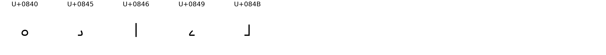
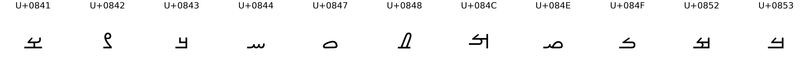
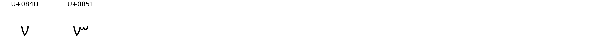
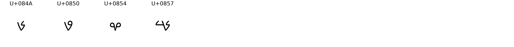
Comparing Clusters
The first step to compare the clusters is creating the rules clusters. We have two sets of data for the rules, one of which contains unique rules that were proposed by at least one person (threshold 1 data) and one that contains unique rules proposed by at least 5 people (threshold 5 data). The threshold 5 data is of higher quality, so we will use that data for the analyses.
# makes kmeans files for all scripts in both t1 and t5kmeansNums =range(2,10)makeRulesKmeans('threshold1',kmeansNums,'ruleClusters_t1',randomSeed=5)makeRulesKmeans('threshold5',kmeansNums,'ruleClusters_t5',randomSeed=5)
Once we have both the rule-based clustering and the image embeddings clustering, we can compare the two clustering methods. Below we print out the cluster sets for Adlam script, first the rule-based clusters and then the image-based.
# shows rule-based clusters for Adlam t5num =6adlamt5 = pd.read_csv('ruleClusters_t5/kmeans_6138ca71dc2a42003d45673e.csv',index_col=False)for i inrange(num): showImgCluster(i, num,adlamt5,save=False,show=True)
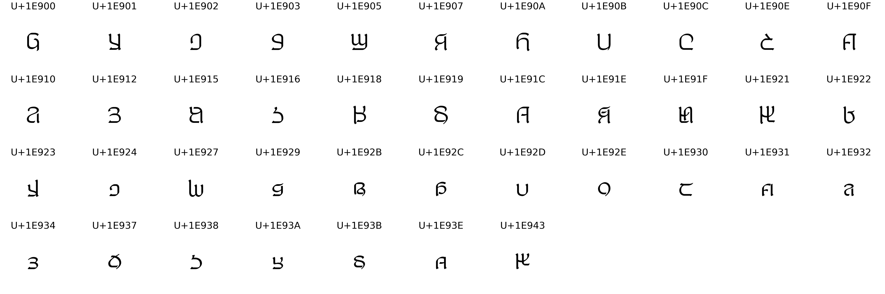
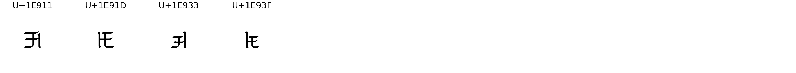
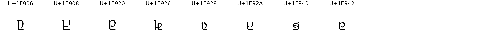
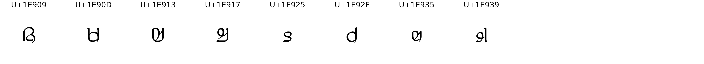
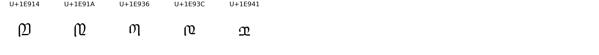
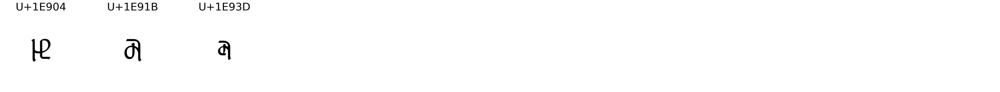
# Shows image-based clusters for AdlamadlamClusters = pd.read_csv('/home/zoe/imgClusters/kmeans_6138ca71dc2a42003d45673e.csv',index_col=False)num =6for i inrange(num): showImgCluster(i, num,adlamClusters,save=False,show=True)
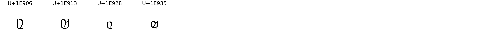
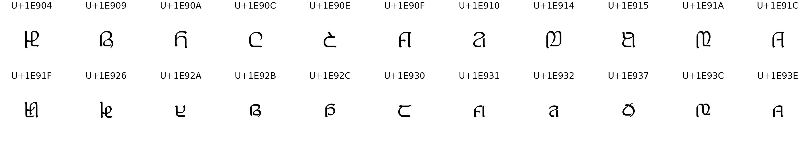
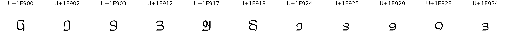
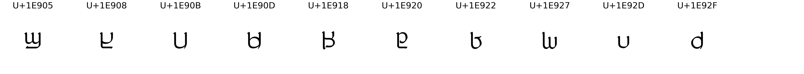
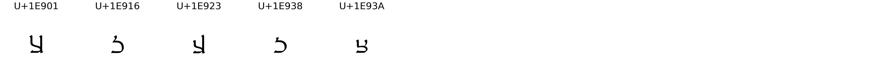
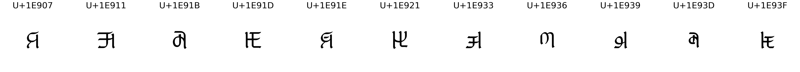
In order to comprehensively compare the two types of clustering, we need a quantitative measure of similarity. For this purpose, I wrote a function to go through each letter pair and count the number of pairs that had the same status in both clusters (either in the same cluster or in different clusters) over the total number of pairs. It turns out that this method is called Random Index and is commonly used for comparing clustering methods. I double checked that my method worked the same as this one on the data.
# confirmation that both methods work the same!print(countSame(list(adlamt5['Unicode']),6,adlamt5,adlamClusters))print(rand_score(adlamt5['Kmeans 6'],adlamClusters['Kmeans 6']))
0.5926251097453907
0.5926251097453907
Now we can run this analysis on all of the scripts, comparing clusters between the rule-based and image-embeddings. As well as using Rand Index (RI), we will also calculate the Adjusted Rand Index (ARI). The Adjusted Rand Index accounts for the chances that items are clustered together or apart by chance, and thus can give a more accurate representation of if the two clustering methods are related. There is some missing data for both rules and images for some scripts for various reasons, so those scripts (Afaka, Miao, Lisu, and Greek) will not be included in the analyses. Before running the analysis, we find the scripts that are not in both rules and images, and we re-sort the files to ensure that the rows line up properly.
# gets the lists of files for both image and rule clustersx = listdir('ruleClusters_t1')y = listdir('imgClusters')for a in x:if a notin y:print(a)for a in y:if a notin x:print(a)# Afaka and Miao are not in images# Lisu and Greek are not in rules
# run to ensure all files are sorted correctly# goes through all files and sorts by unicode# ensures the rows of the files line up for each script between rules and imgsforfilein listdir('ruleClusters_t1'): temp = pd.read_csv('ruleClusters_t1/'+file) temp = temp.sort_values(by='Unicode') temp.to_csv('ruleClusters_t1/'+file)forfilein listdir('ruleClusters_t5'): temp = pd.read_csv('ruleClusters_t5/'+file) temp = temp.sort_values(by='Unicode') temp.to_csv('ruleClusters_t5/'+file)forfilein listdir('imgClusters'): temp = pd.read_csv('imgClusters/'+file) temp = temp.sort_values(by='Unicode') temp.to_csv('imgClusters/'+file,index=False)
# script info to convert between script ID and namescriptDf = pd.read_csv('all-script-data.csv',index_col=False)# kmeans cluster num to useclusterNum =6# initializing listsscript_list = []scriptIDs = []rs = []ars = []# goes through every script with image datafor fileName in listdir('imgClusters'):# skips the scripts without rules dataif fileName in ['kmeans_6138ca71dc2a42003d456732.csv','kmeans_6149eb71161b12003cbb0d48.csv']:continue# reads in the clusters rulet5 = pd.read_csv('ruleClusters_t5/'+fileName) img = pd.read_csv('imgClusters/'+fileName)# gets the list of letters for the language letters = img['Unicode'] code = fileName[fileName.index('_')+1:-4]# gets the name of the script script_list.append(scriptDf[scriptDf['ID']==code].iloc[0]['Name'])# saves the id of the script scriptIDs.append(code)# saves the rand score and adjusted rand score vals for the script rs.append(rand_score(rulet5['Kmeans '+str(clusterNum)],img['Kmeans '+str(clusterNum)])) ars.append(adjusted_rand_score(rulet5['Kmeans '+str(clusterNum)],img['Kmeans '+str(clusterNum)]))
We then take all the information we just calculated and put it in a single dataframe for further analyses.
Taking the information from above, we can look at first the relationship between the ARI and RI values to ensure there is nothing overtly weird going on with the data. The scatterplot shows a strong positive correlation between the two, which is what we would expect to see. Thus we move forward with the analysis.
Then we can look at the distribution of ARI and RI scores via a boxplot. All of the RI values are positive, and almost all of the ARI scores are positive, indicating that there is correlation between the clusters created from the image embeddings and those created from the rules.
Further analyses will ignore the RI values, as ARI is a more significant measure. To ensure that this correlation is significant, we perform a T-test on the ARI values, against a sample mean of 0 (which would indicate no correlation between the clusterings). Our t-test has a very significant p-value (p<0.000001). Although the ARI scores are not super high for ARI, the repeated positive values for all scripts leads to the conclusion that there is significant correlation between the rule-based clusters and image embeddings clusters.
TtestResult(statistic=9.925190281589817, pvalue=1.4033009579512519e-12, df=42)
count 43.000000
mean 0.185206
std 0.122363
min -0.001912
25% 0.072587
50% 0.168039
75% 0.253719
max 0.464668
Name: Adjusted Rand Index, dtype: float64
In an effort to further compare clusters, we performed PCA (keeping factors to explain 80% of the variance ratio) before kmeans and then again after to collapse down to 2D. We then scattered the data from each of the rule and image embeddings to compare. Unfortunately so far we have not found a method to map the data onto the same plane (since they use very different embedding types) so aside from visual comparing of the two, there is little we can do with this visualization.
# choosing the script to analyzescript = scriptIDs[0]# get name and unicodes of the scriptname = scriptDf[scriptDf['ID']==script]['Name'].iloc[0]print(name)unicodes = scriptDf[scriptDf['ID']==script]['Characters'].iloc[0].split(',')print(unicodes)# list of the names of all the image filesimgNames = []for code in unicodes: imgNames.append(script+"_"+code+".png")# reads in all the embeddings necessaryimgEmbeddings = pd.read_csv('imageEmbeddings.csv',index_col=False)scriptEmbeddings = imgEmbeddings[imgEmbeddings['Character'].str.contains(script)]ruleEmbeddings = pd.read_csv('threshold5/Letters_'+name+'.csv',index_col=False).drop(['Unicode','Unnamed: 0'],axis=1)# does pca on image-based embeddingspca = PCA()pca.fit_transform(scriptEmbeddings.drop('Character',axis=1))x = pca.explained_variance_ratio_# plotting the explained variance of each number of componentsplt.plot(range(1,len(x)+1),x.cumsum(),marker='o',linestyle='--')plt.title("PCA component cumulative explained variance ratio (Image-based)")plt.xlabel("# of components")plt.ylabel("Cumulative explained variance")plt.show()# finding smallest number of features over 80% explained varianceimg80percent =next(i for i, val inenumerate(x.cumsum()) if val >0.8)# does pca on rule-based embeddingspca = PCA()pca.fit_transform(ruleEmbeddings)x = pca.explained_variance_ratio_# plotting the explained variance of each number of componentsplt.plot(range(1,len(x)+1),x.cumsum(),marker='o',linestyle='--')plt.title("PCA component cumulative explained variance ratio (Rule-based)")plt.xlabel("# of components")plt.ylabel("Cumulative explained variance")plt.show()# finding smallest number of features over 80% explained variancerule80percent =next(i for i, val inenumerate(x.cumsum()) if val >0.8)
# IMG EMBEDDINGS# collapsing down to 80% explained variance dimensionpca = PCA(n_components=img80percent,random_state=randomSeed)pca.fit(scriptEmbeddings.drop('Character',axis=1))collapsedImg = pca.transform(scriptEmbeddings.drop('Character',axis=1))collapsedImg = pd.DataFrame(collapsedImg)# using 5 clustersimgKmeans = fitKmeans(5,collapsedImg,randomSeed=randomSeed).labels_# collapses to 2d for graphingpca = PCA(n_components=2,random_state=randomSeed)pca.fit(collapsedImg)script2 = pca.transform(collapsedImg)script2 = pd.DataFrame(script2)# gets the unicodes and pulls together all needed infounicodes = pd.DataFrame(unicodes)reorganizedImg = pd.DataFrame()reorganizedImg['Unicodes']=unicodes[0]reorganizedImg['X']=script2[0]reorganizedImg['Y']=script2[1]reorganizedImg['Kmeans 5']=imgKmeansreorganizedImg['Character']=imgNamestexts = []# plots the datafig,ax = plt.subplots()plt.title('Image Embeddings Clusters')plt.xlabel('Feature 1')plt.ylabel('Feature 2')ax.scatter(reorganizedImg['X'], reorganizedImg['Y'], picker=True,c=reorganizedImg['Kmeans 5'])# gets all labelsfor i, label inenumerate(reorganizedImg['Unicodes']): texts.append(ax.text(reorganizedImg['X'].iloc[i], reorganizedImg['Y'].iloc[i], label,fontsize=7)) # Set alpha=0 to hide the labels initially# moves labels so they aren't overlapping as much as possible# can use avoid_self=True to stop text on top of pointsadjust_text(texts,avoid_self=True, arrowprops=dict(arrowstyle="->", color='r', lw=0.5))plt.show()print(len(texts))# RULE EMBEDDINGS# collapsing down to 80% explained variance dimensionpca=PCA(n_components=rule80percent,random_state=randomSeed) # for rule embeddingspca.fit(ruleEmbeddings)collapsedRule = pca.transform(ruleEmbeddings)collapsedRule = pd.DataFrame(collapsedRule)ruleKmeans = fitKmeans(5,collapsedRule,randomSeed=randomSeed).labels_# collapses to 2d for graphingpca = PCA(n_components=2,random_state=randomSeed)pca.fit(collapsedRule)script2 = pca.transform(collapsedRule)script2 = pd.DataFrame(script2)# resets and organizes all infotexts = []reorganizedRule = pd.DataFrame()reorganizedRule['Unicodes']=unicodes[0]reorganizedRule['X']=script2[0]reorganizedRule['Y']=script2[1]reorganizedRule['Kmeans 5']=ruleKmeansreorganizedRule['Character']=imgNames#reorganized = reorganized.sort_values(by='Kmeans 5')# plots the datafig,ax = plt.subplots()plt.title('Rule-based Clusters')plt.xlabel('Feature 1')plt.ylabel('Feature 2')ax.scatter(reorganizedRule['X'], reorganizedRule['Y'], picker=True,c=reorganizedRule['Kmeans 5'])# gets all labelsfor i, label inenumerate(reorganizedRule['Unicodes']): texts.append(ax.text(reorganizedRule['X'].iloc[i], reorganizedRule['Y'].iloc[i], label,fontsize=7)) # Set alpha=0 to hide the labels initially# moves labels so they aren't overlapping as much as possible# can use avoid_self=True to stop text on top of pointsadjust_text(texts,avoid_self=True, force_explode=(1,1),force_pull=(0.001,0.001),arrowprops=dict(arrowstyle="->", color='r', lw=0.5))print(len(texts))plt.show()
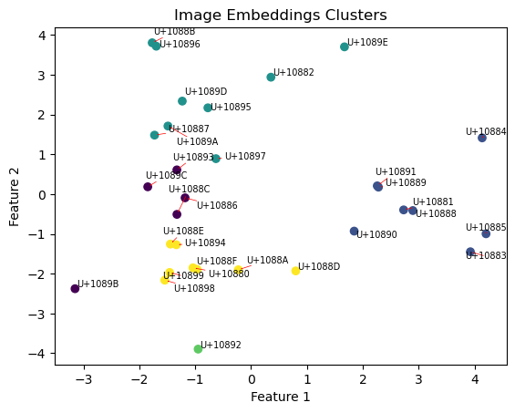
31
31
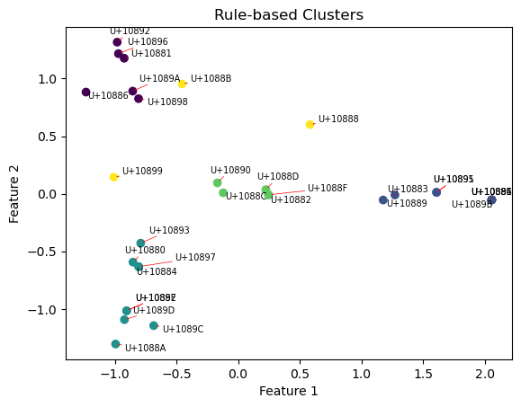
# uncomment below in order to see the character clusters associated with the unicodes/clusters in the above graphs# First 5 are image embeddings clusters# Second 5 are rule-based clusters'''clusterNum = 5for i in range(clusterNum): showImgCluster(i,clusterNum,reorganizedImg)for i in range(5): showImgCluster(i,clusterNum,reorganizedRule)'''
'clusterNum = 5\nfor i in range(clusterNum):\n showImgCluster(i,clusterNum,reorganizedImg)\nfor i in range(5):\n showImgCluster(i,clusterNum,reorganizedRule)'
# This was used to clean up some of the files when they obtained unneccessary columns'''for fileName in listdir('imgClusters'): if fileName in ['kmeans_6138ca71dc2a42003d456732.csv','kmeans_6149eb71161b12003cbb0d48.csv']: continue img = pd.read_csv('imgClusters/'+fileName) img=img.drop(['Unnamed: 0.5','Unnamed: 0.4','Unnamed: 0.3','Unnamed: 0.2','Unnamed: 0.1','Unnamed: 0'],axis=1) img.to_csv('imgClusters/'+fileName,index=False)'''
"for fileName in listdir('imgClusters'):\n if fileName in ['kmeans_6138ca71dc2a42003d456732.csv','kmeans_6149eb71161b12003cbb0d48.csv']:\n continue\n img = pd.read_csv('imgClusters/'+fileName)\n img=img.drop(['Unnamed: 0.5','Unnamed: 0.4','Unnamed: 0.3','Unnamed: 0.2','Unnamed: 0.1','Unnamed: 0'],axis=1)\n img.to_csv('imgClusters/'+fileName,index=False)"
Individual Rule Analysis
Now that we have confirmed that there is correlation between the image embeddings clusters and rule-based clusters, we are interested in which of the rules are most correlated with the image embeddings. To answer this question, we need a different set of data, since the current rule-based data only includes the binary and not a description of the rule.
The new data has descriptions of each rule and is located in the generalRuleData folder. It needs to be cleaned, and the cleaned versions are stored in generalRuleData2 with only the necessary information for each rule (binary string and description). A couple of the data files in the generalRuleData folder could not be read properly (Tagbanwa, Old Permic, and Afaka), and so are not included in the analysis.
# DATA CLEANING# invalid binary: Tagbanwa, Old Permic, Afaka# goes through each file in the data for cleaningforfilein listdir('generalRuleData'):# skips the invalid filesif"Afaka"infile:continueif"Tagbanwa"infile:continueif"Old Permic"infile:continue#print(file)# reads as csv if csv formatif'.csv'infile: csv = pd.read_csv('generalRuleData/'+file,delimiter=';',index_col=False)else:# reads excel files csv = pd.read_excel('generalRuleData/'+file,index_col=False)# renames columns to all be uniform (RuleBinary, Description) csv = csv.rename(columns={"Rule.Binary":"RuleBinary","BinaryRule":"RuleBinary","Binary.Rule":"RuleBinary","Binary code":"RuleBinary"}) csv = csv.rename(columns={"AlineDescription":"Description","SakulratDescription":"Description","AgnesDescription":"Description"})# isolates the needed columns csv = csv[['RuleBinary','Description']]# removes quotes from the RuleBinary column csv['RuleBinary'] = csv['RuleBinary'].str.replace('"','') csv['RuleBinary'] = csv['RuleBinary'].str.replace("'",'')# saves the cleaned file as a csv in the generalRuleData2 folderif'.csv'infile: csv.to_csv('generalRuleData2/'+file,sep=';',index=False)else: csv.to_csv('generalRuleData2/'+file[:file.index('.xlsm')]+'.csv',index=False,sep=';')
Once the data is cleaned, we can go through each rule in each script and see how clustering the letters into two parts using the rule and using the image embeddings relate to each other. We calculate the ARI score for every rule in every script in contrast with the image embeddings clusters of 2 parts.
# checking ARI score for each rule# clusternum to useclusterNum =5# initializing listsscript_list = []scriptIDs = []rs = []ars = []counts = [0,0,0,0]files = listdir('generalRuleData2')count =0# dataframes to contain the most correlated and least correlated rulestop = pd.DataFrame()bottom = pd.DataFrame()# lists to hold all info from top 3 and bottom 3 rules per scriptdescs=[]scripts=[]kmeans2=[]places=[]# goes through each file in the image clustersfor fileName in listdir('imgClusters'):# identifies the script id and script nameid= fileName[fileName.index('_')+1:fileName.index('.')] name = scriptDf[scriptDf['ID']==id]['Name'].iloc[0]# reads in the cluster data for the images img = pd.read_csv('imgClusters/'+fileName)# finds the file with the rule datafile= [s for s in files if name in s]# skips the script if there is no rule dataiffile== []:continue# makes the csv for the script with rule data temp = pd.read_csv('generalRuleData2/'+file[0],delimiter=';',dtype={'RuleBinary':str})# gets the unicodes associated with the script unis = scriptDf[scriptDf['Name']==name]['Characters'].iloc[0].split(",")# creates dataframe to collect all info scriptData = pd.DataFrame(columns=['Unicode',*list(temp['Description'])]) l = temp['RuleBinary']for row inrange(len(l)): scriptData[temp['Description'][row]] =list(l[row])# initializes lists to hold ARI score for 2 clusters and 5 clusters of img data k2 = [] k5 = []# calculates the ARI scoresfor row in temp['RuleBinary']: k2.append(adjusted_rand_score(list(row),img['Kmeans 2'])) k5.append(adjusted_rand_score(list(row),img['Kmeans 5']))# collects the data in one df temp['Kmeans 2'] = k2 temp['Kmeans 5'] = k5 temp['ID'] =id temp['ScriptName'] = name# Threshold for top correlated rules > 0.4 above2 = temp[temp['Kmeans 2']>=0.4][['Description','Kmeans 2','ScriptName','ID']] top = pd.concat([top,above2],ignore_index=True)# Threshold for bottom correlated rules < -0.1 below0 = temp[temp['Kmeans 2']<=-0.1][['Description','Kmeans 2','ScriptName','ID']] bottom = pd.concat([bottom,below0],ignore_index=True)all= [k2,k5] scriptPrinted =False# does p-val significance tests on each script according to all the rules ARIsfor i,l inenumerate(all):# doesn't count the k5 clustersif i==1:continue p = ttest_1samp(l,0,alternative='greater').pvalue# prints the top 5 correlated rules for the significant scriptsif p<0.05:ifnot scriptPrinted:print('\n------------------------------------')print('Script: '+name) scriptPrinted=Trueif(i==0): temp = temp.sort_values(by='Kmeans 2',ascending=False)print(temp[['Description','Kmeans 2']].head())elif(i==1): temp = temp.sort_values(by='Kmeans 5',ascending=False)print(temp[['Description','Kmeans 5']].head())#print('List num: '+str(i))print('p-val: '+str(p)) counts[i]+=1# saves data for top 2 and bottom 2 rules from each script temp = temp.sort_values(by='Kmeans 2',ascending=False) top2 = temp.iloc[:2]# only saves if the top two are both above 0.2ifmin(top2['Kmeans 2'])<0.2:continue bottom2 = temp.iloc[-2:] descs+=list(top2['Description']) descs+=list(bottom2['Description']) scripts+=[name,name,name,name] kmeans2+=list(top2['Kmeans 2']) kmeans2+=list(bottom2['Kmeans 2']) places+=list(['top','top','bottom','bottom'])
------------------------------------
Script: Pracalit
Description Kmeans 2
8 All characters have a right angle. 0.376064
5 Characters without an overhead horizontal stra... 0.330638
7 A straight horizontal and vertical line meet a... 0.330046
1 Can be written with a single continuous stroke... 0.068576
4 Contains at least one closed loop, small circl... 0.067456
p-val: 0.022694625088889458
------------------------------------
Script: Sora Sompeng
Description Kmeans 2
6 Contains at least one right angle. 0.240000
4 Lines without circles at the end. 0.093333
2 No enclosed elements, whitespace, shapes, area... 0.093333
14 A round shape on the top, with a slight curl t... 0.093333
5 No circles, curlicues, or round shapes in the ... 0.040000
p-val: 0.03247052524420015
------------------------------------
Script: Mongolian
Description Kmeans 2
2 Characters that are entirely below a horizonta... 0.416173
14 Characters starting at the left with a hook an... 0.341390
6 Characters that can be drawn with one continuo... 0.215252
1 Characters with a straight horizontal line at ... 0.163150
13 Characters with simple left hook, left "walkin... 0.160790
p-val: 0.03876886434736071
------------------------------------
Script: Batak
Description Kmeans 2
8 Characters with a convex stroke or arch on top. 0.205342
7 Characters with curved lines and dashes undern... 0.119684
12 Characters made with a single continuous line ... 0.075041
1 Characters or symbols with three horizontal lines 0.054472
5 Characters with enclosed spaces and closed loo... 0.049786
p-val: 0.016113690853595375
------------------------------------
Script: Shavian
Description Kmeans 2
10 Characters with sharp corners/angles/kinks/ben... 0.155707
8 Curves of characters are barely open and almos... 0.129684
2 Character has two parts touching the floor, wi... 0.100812
11 One straight line with a small arc at one end,... 0.073421
5 Contains a vertical symmetry axis. 0.033478
p-val: 0.010594777785846369
------------------------------------
Script: Hangul
Description Kmeans 2
18 Characters that are written only in the upper ... 0.551971
7 Characters that contain an enclosed space or loop 0.264628
6 Characters that contain one or more curved, ro... 0.257320
3 Characters that contain one or more long verti... 0.229979
12 Characters that are composed of two identical ... 0.150843
p-val: 0.013728760082299713
------------------------------------
Script: Pau Cin Hau
Description Kmeans 2
10 Have curved lines only. 0.441940
1 Characters with only straight lines, abscence ... 0.148124
2 Characters with a diagonal line. 0.108004
3 Characters with a diagonal straight line. 0.070681
8 Characters that look like Latin alphabet letters. 0.065566
p-val: 0.01836413429905731
------------------------------------
Script: Runic
Description Kmeans 2
16 Symbols in pairs, with one containing a dot. 0.442371
17 Characters with at least one curved line. 0.430419
18 Elements are located to the right of the verti... 0.408944
14 Contains multiple disconnected parts. 0.299141
13 Characters with separate dots, containing a do... 0.278547
p-val: 0.014269547291016529
------------------------------------
Script: Adlam
Description Kmeans 2
4 Characters have lines that cross each other. 0.048236
6 Characters have a vertical line with a right a... 0.045106
3 Characters have two curves (up or down) and ma... 0.037079
0 Characters have roughly the shape of an "m" an... 0.017631
1 Characters have a horizontal line at the top a... 0.010570
p-val: 0.010353723565729615
------------------------------------
Script: Zanabazar Square
Description Kmeans 2
1 All characters have a flag-like mark in the to... 0.605750
6 Variations of the letter E in different orient... 0.490517
2 Contains elements with curved lines/segments. 0.251935
3 Characters contain curves or rounded elements. 0.195553
7 Characters with flagged and unflagged pairs. 0.153392
p-val: 0.04462181671309866
------------------------------------
Script: Ogham
Description Kmeans 2
1 Characters with small solid diamond dots on a ... 0.350309
11 Single stroke characters 0.256293
9 Characters with parallel vertical lines or bars 0.180802
10 Characters with parallel vertical lines 0.180802
13 Characters with vertical lines and right angles 0.114307
p-val: 0.0495115137298399
------------------------------------
Script: Warang Citi
Description Kmeans 2
1 Characters with no ends, topologically equival... 0.223878
3 Characters that are symmetrical around a horiz... 0.187526
4 Characters that are symmetrical around a verti... 0.169361
5 Characters that have an axis of symmetry, eith... 0.105749
2 Characters with one or more closed loops or en... 0.060936
p-val: 0.023281867442259824
------------------------------------
Script: Meetei Mayek
Description Kmeans 2
10 Characters with a straight horizontal stroke a... 0.533864
9 Characters contain straight lines only 0.424112
7 Characters with a top that is not entirely fla... 0.345906
12 Characters with enclosed space/loop 0.275250
5 Characters without a top horizontal line or fl... 0.247506
p-val: 0.005135448287340411
------------------------------------
Script: Buginese
Description Kmeans 2
10 Characters contain a U shape on a diagonal or ... 0.294479
0 Characters have a double hump or wave shape. 0.292066
3 Characters have vertical symmetry, meaning the... 0.192705
5 Characters have three endpoint or extremum poi... 0.129730
9 Characters have a diagonal or oblique shape, o... 0.129730
p-val: 0.015800204969971192
Now we have the top and bottom correlated rules for all the scripts, so we can analyze them and see what differences there are between the two groups.
top = top.sort_values(by='Kmeans 2',ascending=False)top.to_csv('topDescriptions.csv')for row in top['Description']:print(row)
Characters resembling an L (right-side up and upside down).
Contains lines which crossover (like a cross).
Characters with a curved top line (like a hat)
Characters consist of one smooth line with a single change of direction.
Characters represent the letter U or W
Characters have dots
All characters have a flag-like mark in the top-right corner.
Characters are open at the top and shaped like a "U" or "W". They would be able to hold a substantial amount of fluid if filled from the top and are suitable for carrying water.
Characters that have an arc shape, connecting two vertical lines at a 90 degree angle
Characters that are written only in the upper part of a box or space.
Characters with a straight horizontal stroke at the bottom, or a flat bottom, and is used in font encoding
Variations of the letter E in different orientations and with embellishments.
Characters that are topologically one line with no points or loops, no crossing or doubling back, and no kinks.
Characters start with the 6 shape
Contains a circle or oval shape.
Letters with a shape similar to the letter "y"
Symbols in pairs, with one containing a dot.
Have curved lines only.
Characters with at least one curved line.
Characters contain straight lines only
Characters that are entirely below a horizontal line.
A single line without loops or backtracking, with no more than two curves.
Elements are located to the right of the vertical line or dot.
bottom = bottom.sort_values(by='Kmeans 2')bottom.to_csv('bottomDescriptions.csv')for row in bottom['Description']:print(row)
Characters with duplicated elements in succession.
Each of these characters has an enclosed, non-crossed loop.
Contains multiple upward loops with a wave-like appearance.
Characters with a closed loop or knot.
Letters that have a mirror image that is symmetrical about a vertical axis
Characters that are mirrored or rotated pairs
Contains a full length diagonal line bottom left to top right.
Characters that are reflections of another character, symmetrical about a vertical axis
Characters that resemble the letter "e" or "E"
Characters that are symmetrical about an axis, either horizontally or vertically
All characters have two vertical legs and are open at the bottom
Characters contain a closed loop or oval shape
Characters contain a closed loop or enclosed space in the character or graph
Characters are composed of two identical curved elements with a protrusion to the right.
Loop on the left side, closed and uncrossed character, resembling Arabic numerals, including loops, and small closed shapes.
Characters that have a '2' or bass clef shape on the left side, with variations such as a small circle running into the shape or a looped finish.
Features a horizontal bar at the top, a vertical bar to the right, another to the left, and a bottom-left to top-right diagonal.
Contains two or more separate elements.
Leaf-like enclosed shape or small enclosed space(s) off of a single vertical line connected to top, oriented to the left off the right vertical line.
Characters that do not have any straight lines within them
Includes shapes of V or W.
A long, upward-right-moving stroke, with a wide base and a pointed tip.
Characters that start with a closed loop with a curve to the right, resembling the numeral 6 written horizontally.
Characters that are either 7s or have a small horizontal line at the top and a vertical stroke. They may also have a small appendage at the top going from right to left. They may be in pairs with a size difference.
All characters have a wave or squiggle
Contains a closed loop.
Characters that are a straight vertical line with no base or hook at the bottom.
All characters contain intersecting lines
All characters contain 90 degree angles
Characters that do not have any enclosed shapes or spaces.
Characters that contain a small closed circular loop
Has a squiggle-like design with multiple variations of curved and straight lines.
Contains a w-squiggle.
Characters with a triangle shape at the top connected to a descending line.
Characters that have a detached extra symbol above or below the main line.
All characters start with a distinct upright 'U' shape and have a declination around it.
A letter with two peaks at the top, resembling u, v and w.
All characters have a closed loop.
Contains an X shape, either as a character or graphically.
Characters that start with or include the shape of the numeral 2, with variations such as a long straight line at the bottom or marks on top or underneath.
In general, the rules that show higher correlation with the image embeddings are those that mention the shape of the entire character, and focus on larger, simpler building blocks instead of a couple specific pieces of the character. Those at the bottom tend to be more complex amalgamations of features that don’t necessarily describe the entire character but rather a smaller section.
All the rules collected in the “all” dataframe were rated on three different descriptions. The first was if the rule described the whole character or just part of the character (whole?). The second is if the rule described an aspect of the character—such as crossing lines, parallel lines, or symmetry—or a specific feature of the character—such as a circle, specific shape, or specific line—(aspect?). The last classification is if the rule is “simple” or not. Simple is defined as only describing one aspect or feature of the character, whereas a complex rule may have multiple stipulations for the character to be included in the rule’s scope. The ratings are found in the ruleClassification.csv file.
from scipy.stats import ttest_indprint(ttest_ind(topRules['Whole'],bottomRules['Whole'],nan_policy="omit").pvalue)print(ttest_ind(topRules['Aspect'],bottomRules['Aspect'],nan_policy="omit").pvalue)print(ttest_ind(topRules['Simple'],bottomRules['Simple'],nan_policy="omit").pvalue)